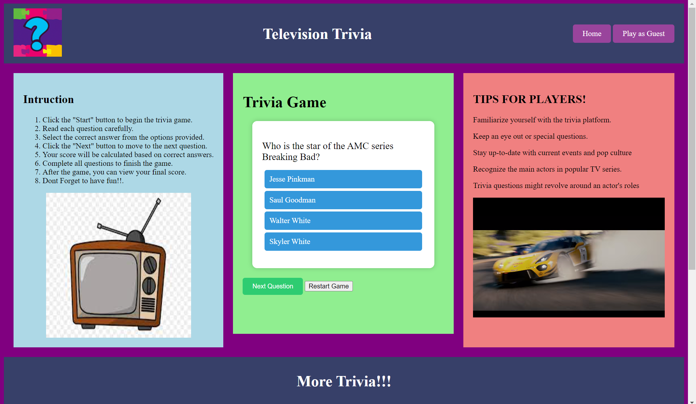

About
Hi I’m Kamal, I am a determined individual with a positive attitude, strong organizational and multitasking skills, and an aptitude for technology. Ready to apply knowledge and skills to Web Developing and ongoing learning. Seeking to utilize excellent communication, interpersonal and effective problem solving to complete tasks. Reliable with a good work ethic and the ability to quickly adapt to new tasks and environments. Driven by a passion for excellence and unwavering commitment to continuous growth, I am poised to make a meaningful impact in the coding industry!

FrontEnd Developer.
I'm excited to embark on a coding journey, a path filled with endless possibilities and opportunities for growth. As a newcomer to the world of programming, I am eager to explore the realms of coding, starting with HTML and CSS, the building blocks of the web. I'll be setting up my coding environment, diving into online tutorials and courses, and honing my skills through practice. With each line of code I write, I know I'll be one step closer to creating my own web projects and expanding my knowledge. I'm ready to embrace the challenges, learn from my mistakes, and connect with fellow coding enthusiasts. This is the beginning of a thrilling adventure, and I can't wait to see where it takes me.
PROJECTS
Pictures of Project
Mug Store website
Brain Tease
Trivia Game
Finance Website/App
Professional Experience
Senior graphic design specialist
2019 - Present
Experion, New York, NY
- Lead in the design, development, and implementation of the graphic, layout, and production communication materials
- Delegate tasks to the 7 members of the design team and provide counsel on all aspects of the project.
- Supervise the assessment of all graphic materials in order to ensure quality and accuracy of the design
- Oversee the efficient use of production project budgets ranging from $2,000 - $25,000
Graphic design specialist
2017 - 2018
Stepping Stone Advertising, New York, NY
- Developed numerous marketing programs (logos, brochures,infographics, presentations, and advertisements).
- Managed up to 5 projects or tasks at a given time while under pressure
- Recommended and consulted with clients on the most appropriate graphic design
- Created 4+ design presentations and proposals a month for clients and account managers
Skills
HTML
I've recently embarked on a journey into the world of HTML, and it's been an exciting experience so far. Starting from scratch, I've dived into the intricacies of web development, and gradually, I'm beginning to get the hang of it. With each line of code I write, I see my first website taking shape, and it's incredibly satisfying. Learning HTML has opened up a whole new realm of possibilities, and I can't wait to explore more of the web development landscape.
CSS
Venturing into the realm of web design, I've recently started learning CSS, and it's proven to be an enlightening journey. As I delve into the world of cascading style sheets, I'm beginning to understand how to bring life and style to my web creations. Each property and rule I experiment with allows me to mold and beautify my web pages. Learning CSS is like acquiring a painter's palette, and I'm eagerly adding color and texture to my HTML canvas. It's an artistic adventure that's taking shape, and I'm excited to see the visual transformations I can achieve.
JAVASCRIPT
Although my foundation in HTML and CSS might be stronger, I've found my foray into Java to be quite intriguing. Despite not being as proficient, I'm enjoying the journey of learning Java. It's a captivating language with its own unique charm. While my HTML and CSS skills are solid, delving into Java has added an exciting layer to my programming repertoire. I'm pleasantly surprised by how versatile and interesting Java can be, and I look forward to honing my skills further in this dynamic programming language.
SCRUM
In my recent venture into the world of Scrum, I found the experience to be incredibly enlightening and captivating. The structured framework and iterative approach of Scrum not only streamlined our project management but also fostered a collaborative environment that fueled creativity and innovation.
GITHUB
As I navigate through repositories, commit changes, and collaborate with others, I'm starting to see the incredible value it adds to the development process. GitHub is like the backbone of my coding journey, ensuring that my projects are organized, accessible, and open to collaboration. It's become an essential tool in my toolbox, and I'm eager to unlock even more of its potential as I continue to grow as a developer.
WORDPRESS
Et harum quidem rerum facilis est et expedita distinctio. Nam libero tempore, cum soluta nobis est eligendi
Contact
Feel free to reach out to me at the following email address:
Email:
Kamalhass603@gmail.com